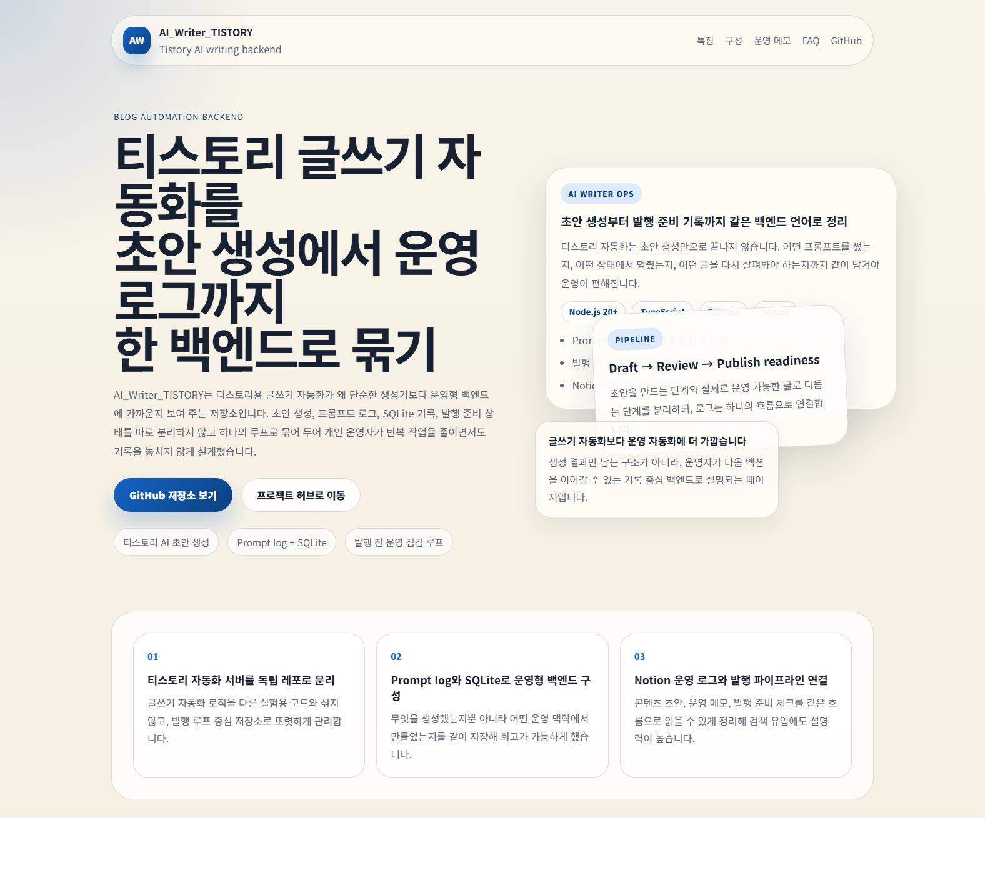

초안 품질
문장 생성보다도, 블로그 목적에 맞는 톤과 구조를 유지하는 것이 중요합니다.
AI_Writer_TISTORY는 초안 생성만 잘하는 도구가 아니라, 초안이 어떻게 쌓이고 어떤 로그가 남고 어떤 순서로 발행 준비까지 가는지를 운영 관점에서 정리하는 프로젝트입니다.
Draft
AI 초안 생성
Log
Prompt / 운영 기록
Publish
발행 준비 흐름

초안 생성만 자동화하면 결국 사람 손이 많이 갑니다. 이 저장소는 생성 이후의 상태 관리와 발행 준비를 함께 다루는 백엔드 역할에 더 가깝습니다.
01 Input
프롬프트와 운영 조건을 입력합니다.
02 Draft
AI 초안을 만들고 prompt log를 남깁니다.
03 Review
발행 전 검토와 수정 포인트를 정리합니다.
04 Publish Ready
티스토리 발행 직전 상태로 넘깁니다.
문장 생성보다도, 블로그 목적에 맞는 톤과 구조를 유지하는 것이 중요합니다.
어떤 프롬프트와 설정이 어떤 초안을 만들었는지 남겨야 개선이 가능합니다.
실제 서비스 단계에서는 승인 큐와 SEO 검수 단계가 꼭 필요합니다.
초안 생성과 발행을 확실히 분리해 실수로 공개되지 않도록 해야 합니다.
제목, 설명, 중복 표현, 링크 구조를 발행 전에 체크하는 기능이 필요합니다.
티스토리 API 실패와 재시도 기준을 운영자가 쉽게 이해할 수 있게 보여줘야 합니다.